주말이 끝나고 일요일 오후 3시에 개장하면 대개의 경우 큰 움직임이 나오는데
어제는 별로 힘찬 움직임이 없어서 지켜보기만 하다 끝남
오늘 아침6시부터 매매시작해서 다섯번 매매
월요일은 정신상태가 흐릿해서 원래 적은 양으로 매매
1차 익절후에 매수가로 이동시킨 주문이 두번이나 걸려서 큰 수익을 못내다가
세번째 매매에서 한번 길게 뻗어주는 바람에 존버로 한껀 왕건이 건짐
나머지 두번은 깔끔하게 매매마무리
역매매지만 다이버전스 떠서 적게 먹으려 들어감
껌값 벌고 나옴
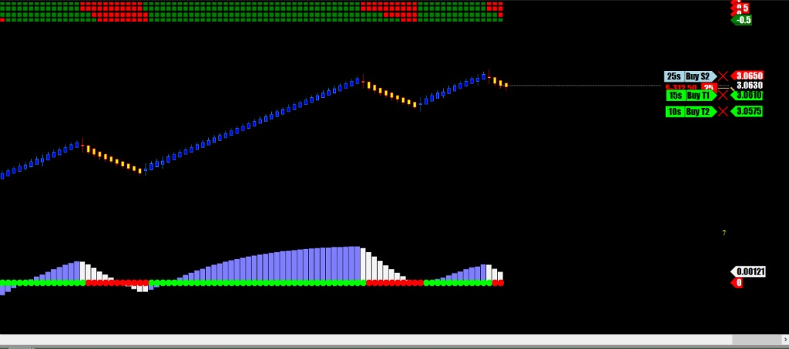
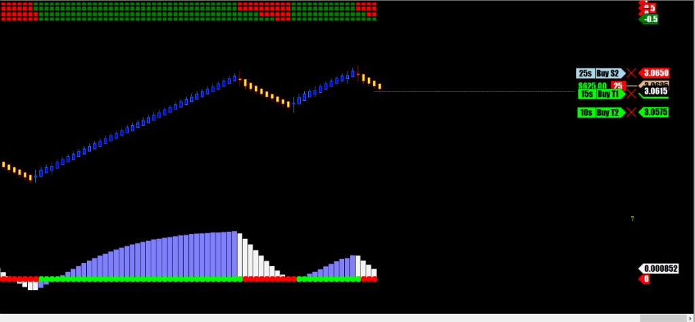
1차 익절후 곧바로 튀어올라 매도가에서 손절. 껌값챙김
역매매는 언제나 영양가 없음..하이고.. 의미없다
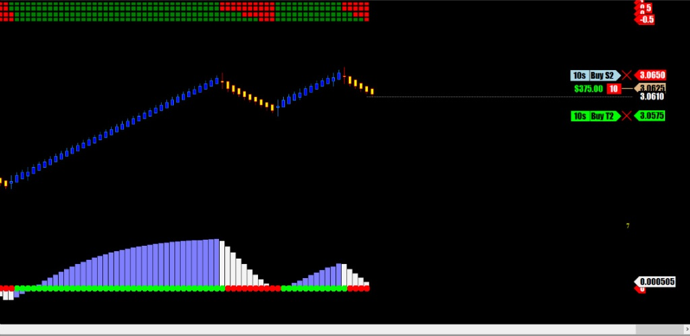
이번엔 제대로 된 신호나옴
윗쪽 이평선 신호도 제대로 뜨고 모멘텀도 상승신호 물량 실어 공격 !!!!
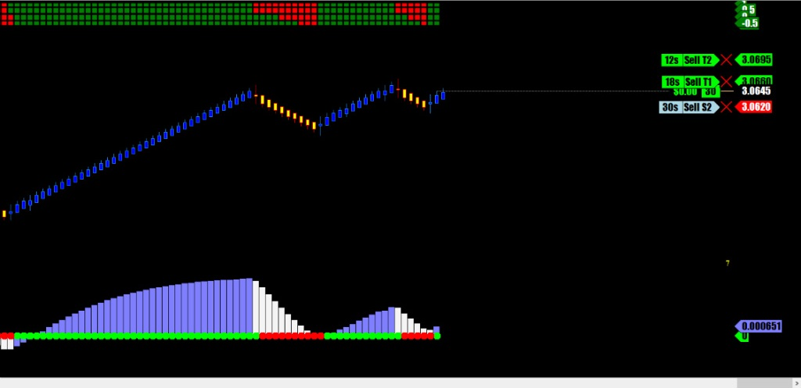
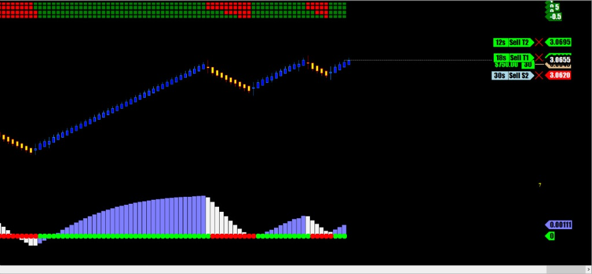
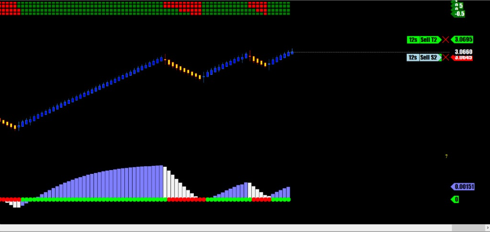
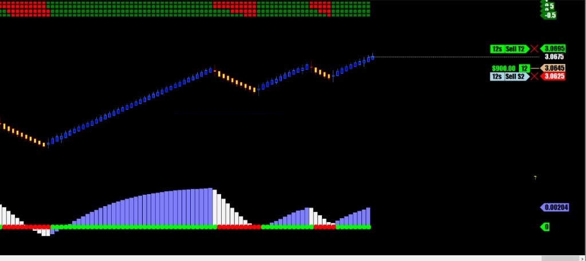
역쉬...Treand is my friend
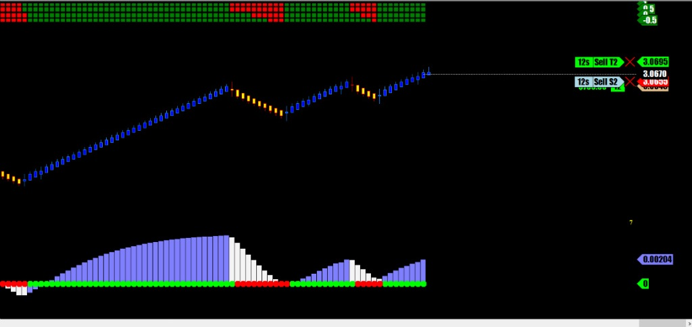
이번엔 또 역매매.
그 이유는 일단 상승 모멘텀이 죽어버렸고 다른 챠트상에서 MACD 신호가 하락으로 완전히 꺽임
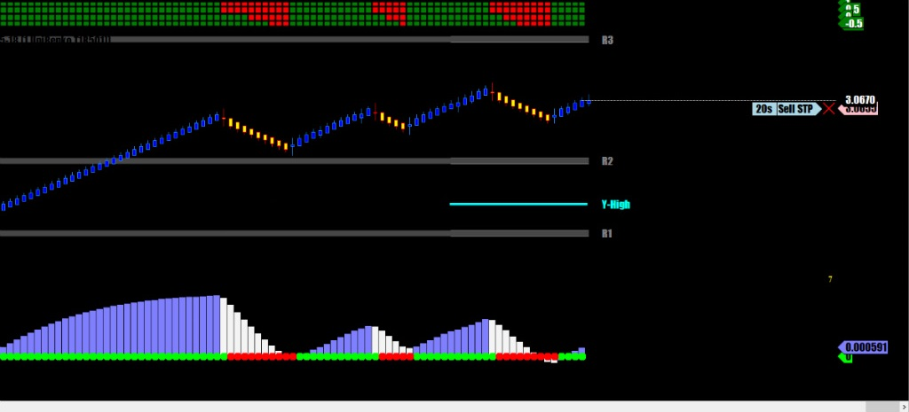
일단 짧은 1차 익절로..
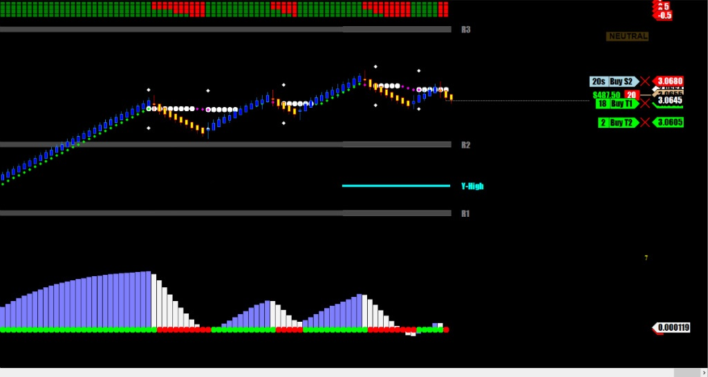
아침 8시..큰 움직임은 이제 다 끝난듯..조금 더 하락할거 같지만 여기서 마무리..
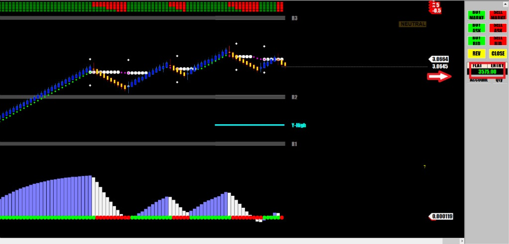
구리선물은 거래량은 크루드오일보다 작지만 움직임이 시원하고 큰손들이 진행방향과 반대로 질러대는 일이 드물기 때문에
스트레스 덜받고 매매하기 좋은 선물
요즘 미국 국채선물은 해외정부들의 매수매도가 사라지는 바람에 매매하기가 매우 어려운 상황임
도날드가 무역전쟁한다고 난리치는통에 국채선물이 대부분 큰 움직임이 사라짐
당분간은 구리선물로 나가야 할 듯.